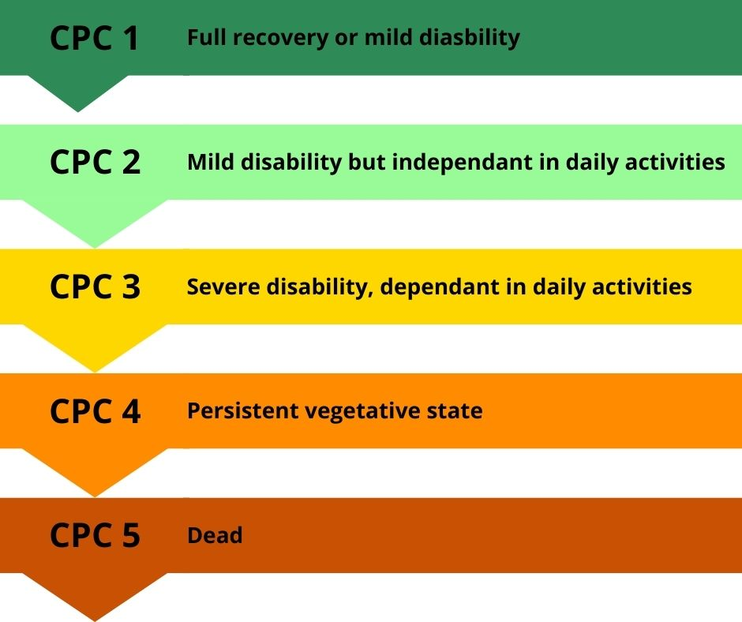

Variables d'entrée
Résultats
Veuillez entrer les variables et cliquer sur "Calculer le Score".
Informations
Pour en savoir plus, consultez l'article sur PubMed.
Veuillez entrer les variables et cliquer sur "Calculer le Score".
Pour en savoir plus, consultez l'article sur PubMed.